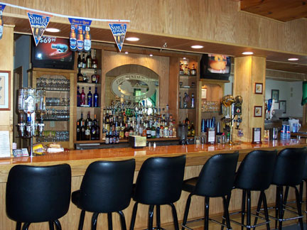

How to Have Fun Golfing

Everyone who golfs has fun, but some more than others. These are a few tips to spice up your experience on the golf course.
Steps
- Make sure you go with people who you like, and people who like you. Nothing is worse than trying to have fun with a bunch of serious golfers.
- Don't worry about your score! If you go into the round with low expectations and knowing you are not going to be serious, you're either going to be right or pleasantly surprised.
- Shout, yell, throw, be a complete maniac! If your ball hits a tree and goes into the water, go nuts! Put on a show for your group members. It's fun.
- If you even consider laying up instead of going for the green, you are ruining the fun of golf. Take the bigger club, try to clear the water, it's just a game! Think about it, what's better? Laying up and Bogeying or Parring the hole, or ripping a shot 230 yards and impressing your friends?
- Eat, drink, drive fast. If the food, drinks, and carts are out there, use them!
- Last but not least, relax! Wouldn't you take a high-scoring fun round over a low-scoring boring round any day?
Tips
- If you're not a pro, your score doesn't matter!
- Have fun!
Warnings
- Being a complete idiot on the golf course isn't great advice, but golfers tend to be smart enough to know the limits of the course they're playing at.
- Make sure you know the term "Fore".